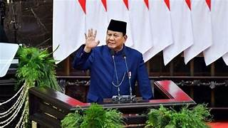
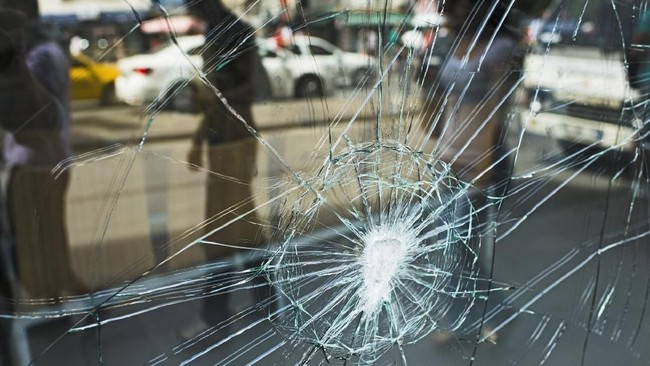

Daftar Berita Terbaru
Prabowo Subianto dan Gibran Rakabuming Raka Resmi Dilantik Sebagai Presiden dan Wakil Presiden RI
Diterbitkan pada: 23 Oktober 2024
Prabowo Subianto dan Gibran Rakabuming Raka secara resmi dilantik sebagai Presiden dan Wakil Presiden Republik Indonesia dalam sebuah upacara kenegaraan yang khidmat. Pelantikan tersebut disaksikan oleh berbagai pejabat negara, tokoh masyarakat, dan perwakilan dari berbagai negara. Dalam pidatonya, Prabowo menekankan pentingnya persatuan dan kerja keras untuk membawa Indonesia menuju masa depan yang lebih baik. Gibran, yang merupakan putra dari Presiden Joko Widodo, juga menyampaikan rasa syukurnya dan siap bekerja sama dalam memimpin Indonesia.
Kecelakaan Beruntun Flyover Depok Diduga Akibat Motor Pelat Dinas
Diterbitkan pada: 23 Oktober 2024
Kecelakaan beruntun di Flyover Depok melibatkan beberapa kendaraan, diduga akibat motor pelat dinas. Kejadian tersebut menimbulkan kemacetan yang cukup parah dan menjadi perhatian publik. Pihak kepolisian sedang menyelidiki penyebab kecelakaan ini.